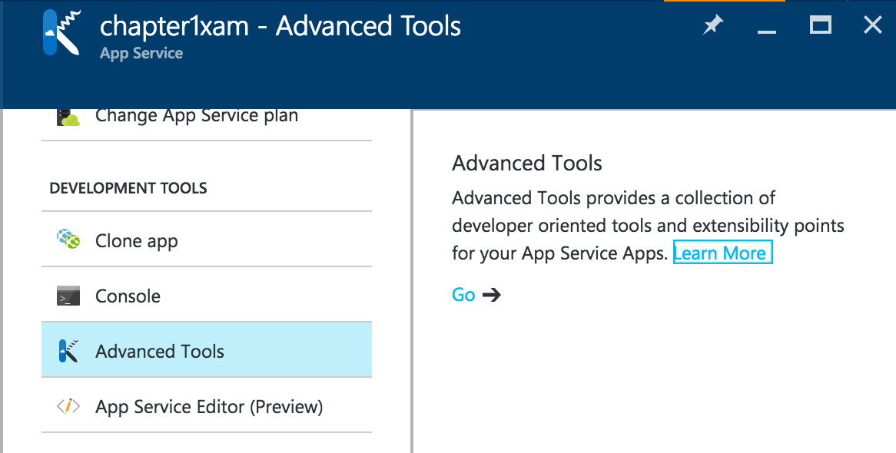

Your First Mobile App on a Mac¶
There is a lot of detail to absorb about the possible services that the mobile client can consume and I will go into significant depth on those subjects. First, wouldn't it be nice to write some code and get something working? Microsoft Azure has a great first-steps tutorial that takes you via the quickest possible route from creating a mobile backend to having a functional backend. I would like to take things a little slower so that we can understand what is going on while we are doing the process. We will have practically the same application at the end. The primary reason for going through this slowly is to ensure that all our build and run processes are set up properly. If this is the first mobile app you have ever written, you will see that there are quite a few things that need to be set up. This chapter covers the set up required for a MacOS computer. If you wish to develop your applications on a Windows PC, then skip to the prior section.
The application we are going to build together is a simple task list. The mobile client will have three screens - an entry screen, a task list and a task details page. I have mocked these pages up using MockingBot.
Tip
Mocking your screens before you start coding is a great habit to get into. There are some great tools available including free tools like MockingBot. Doing mockups before you start coding is a good way to prevent wasted time later on.
Tip
If you are using iOS, then you may want to remove the back button as the style guides suggest you don't need one. Other platforms will need it though, so it's best to start with the least common denominator. It's the same reason I add a refresh button even though it's only valid on Windows Phone!
My ideas for this app include:
- Tapping on a task title in the task list will bring up the details page.
- Toggling the completed link in the task list will set the completed flag.
- Tapping the spinner will initiate a network refresh.
Now that we have our client screens planned out, we can move onto the thinking about the mobile backend.
The Mobile Backend¶
The mobile backend is an ASP.NET WebApi that is served from within Azure App Service: a highly scalable and redundant web hosting facility that supports all the major web languages (like ASP.NET, Node, PHP and Python). Azure Mobile Apps is an SDK (which is available in ASP.NET and Node) that runs on top of Azure App Service.
Creating a Simple Azure Mobile Apps Backend¶
To get started:
- Fire up Visual Studio for Mac.
- Create a new solution with File -> New Solution....
- In the New Project window, choose Other -> ASP.NET, select Empty ASP.NET Project, then click Next.
- In the Configure your Web project window, check the Web API box and uncheck the Include Unit Test Project, then click Next.
- In the second Configure your new project window, enter Backend for the for the Project Name and Chapter1 for the Solution name. Click Create to generate the files.
At this point, Visual Studio for Mac will lay down the template files on your disk and download the core ASP.NET libraries from NuGet. You will need to accept the licenses for the downloaded NuGet packages.
Visual Studio for Mac does not have the range of templates that Visual Studio for the PC has. As a result, we will need to do some additional work putting together a base project. The core of Azure Mobile Apps runs on .NET Framework 4.6.x. Right-click your Backend project in the Solution Explorer and choose Options. The target framework setting is located in the Build -> General section. You can choose any .NET Framework in the 4.6.x range.
Click OK to accept the change and close the Project Options.
Although a core set of NuGet packages are installed during project creation, we need to add the Azure Mobile Apps NuGet packages. The easiest way to do this is to install the Azure Mobile .NET Server Quickstart NuGet package, which contains dependencies on all the other Azure Mobile Apps packages. Expand the Backend project in the solution explorer, right-click Packages, then select Add Packages.... Use the search box to find the appropriate NuGet package. You also need to add the Owin System host Microsoft.Owin.Host.Systemweb NuGet package. You should take the opportunity to update any NuGet packages that were automatically added to the project. To do so, right-click Packages, then choose Update.
Start by configuring the Azure Mobile Apps SDK. The Owin process runs the Startup.cs object to configure itself. To create the Startup.cs class:
- Right-click the Backend folder.
- Select Add -> New File....
- Select General -> Empty Class, and set the name of the class to
Startup.cs. - Click New.
Leave off the .cs on the end
If your filename does not have a dot in it (and some that we use do), you can leave off the .cs trailing extension. Visual Studio for Mac will add it for you.
The Startup.cs class looks like this:
using Microsoft.Owin;
using Owin;
[assembly: OwinStartup(typeof(Backend.Startup))]
namespace Backend
{
public partial class Startup
{
public void Configuration(IAppBuilder app)
{
ConfigureMobileApp(app);
}
}
}
The ConfigureMobileApp() method is located in the App_Start\Startup.MobileApp.cs file that we will create next. Create the file the same way you did the Startup.cs file, then enter the following into the new file:
using System;
using System.Collections.Generic;
using System.Configuration;
using System.Data.Entity;
using System.Web.Http;
using Microsoft.Azure.Mobile.Server;
using Microsoft.Azure.Mobile.Server.Authentication;
using Microsoft.Azure.Mobile.Server.Config;
using Backend.DataObjects;
using Backend.Models;
using Owin;
namespace Backend
{
public partial class Startup
{
public static void ConfigureMobileApp(IAppBuilder app)
{
var config = new HttpConfiguration();
var mobileConfig = new MobileAppConfiguration();
mobileConfig
.AddTablesWithEntityFramework()
.ApplyTo(config);
Database.SetInitializer(new MobileServiceInitializer());
app.UseWebApi(config);
}
}
public class MobileServiceInitializer : CreateDatabaseIfNotExists<MobileServiceContext>
{
protected override void Seed(MobileServiceContext context)
{
List<TodoItem> todoItems = new List<TodoItem>
{
new TodoItem { Id = Guid.NewGuid().ToString(), Text = "First item", Complete = false },
new TodoItem { Id = Guid.NewGuid().ToString(), Text = "Second item", Complete = false }
};
foreach (TodoItem todoItem in todoItems)
{
context.Set<TodoItem>().Add(todoItem);
}
base.Seed(context);
}
}
}
Let's break this down a little bit. The ConfigureMobileApp() method is called to configure Azure Mobile Apps when the service starts. The code tells the SDK that we want to use tables and that those tables are backed with Entity Framework. We also want to initialize the database that we are going to use. That database is going to use a DbContext called MobileServiceContext. The initialization code will create the database and seed it with two new items if it doesn't already exist. If it exists, then we assume that we don't need to seed the database with data.
The MobileServiceContext is used to configure the tables within the database and to project those tables into Entity Framework. It relies on a model for each table. In Azure Mobile Apps, this is called the Data Transfer Object or DTO. The server will serialize a DTO to JSON for transmission. Our DTO is in a new directory called DataObjects (right-click on Backend and choose Add -> New Folder... to create it) and is called TodoItem.cs:
using Microsoft.Azure.Mobile.Server;
namespace Backend.DataObjects
{
public class TodoItem : EntityData
{
public string Text { get; set; }
public bool Complete { get; set; }
}
}
We base each DTO we use on the EntityData class, since we are using Entity Framework. This sets up some additional columns in the data model so that we can keep track on mobile device changes. We will be discussing this in more detail in the Data Access and Offline Sync chapter.
We also need the Models\MobileServiceContext.cs which sets up the tables for us:
using System.Data.Entity;
using System.Data.Entity.ModelConfiguration.Conventions;
using System.Linq;
using Microsoft.Azure.Mobile.Server;
using Microsoft.Azure.Mobile.Server.Tables;
using Backend.DataObjects;
namespace Backend.Models
{
public class MobileServiceContext : DbContext
{
private const string connectionStringName = "Name=MS_TableConnectionString";
public MobileServiceContext() : base(connectionStringName)
{
}
public DbSet<TodoItem> TodoItems { get; set; }
protected override void OnModelCreating(DbModelBuilder modelBuilder)
{
modelBuilder.Conventions.Add(
new AttributeToColumnAnnotationConvention<TableColumnAttribute, string>(
"ServiceTableColumn", (property, attributes) => attributes.Single().ColumnType.ToString()));
}
}
}
A DbSet<> statement is needed for each table we wish to expose to the mobile clients. There are a couple of important items here. Firstly, our connection string is called MS_TableConnectionString. This is set up in the Web.config file and overridden in the Azure Portal so that you can do both local development and run
against a production database in the cloud. Do not change this name.
The OnModelCreating() method sets up the tables to handle the service columns that are contained within the EntityData class used by the DTO. Certain fields need to be indexed and triggers need to be added to keep the values updated properly.
Finally (in terms of code), we need to create a table controller. This is the endpoint that is exposed on the Internet that our mobile clients will access to send and receive data. Create a Controllers folder and add the following TodoItemController.cs class:
using System.Linq;
using System.Threading.Tasks;
using System.Web.Http;
using System.Web.Http.Controllers;
using System.Web.Http.OData;
using Backend.DataObjects;
using Backend.Models;
using Microsoft.Azure.Mobile.Server;
namespace Backend.Controllers
{
public class TodoItemController : TableController<TodoItem>
{
protected override void Initialize(HttpControllerContext controllerContext)
{
base.Initialize(controllerContext);
MobileServiceContext context = new MobileServiceContext();
DomainManager = new EntityDomainManager<TodoItem>(context, Request);
}
// GET tables/TodoItem
public IQueryable<TodoItem> GetAllTodoItems() => Query();
// GET tables/TodoItem/48D68C86-6EA6-4C25-AA33-223FC9A27959
public SingleResult<TodoItem> GetTodoItem(string id) => Lookup(id);
// PATCH tables/TodoItem/48D68C86-6EA6-4C25-AA33-223FC9A27959
public Task<TodoItem> PatchTodoItem(string id, Delta<TodoItem> patch) => UpdateAsync(id, patch);
// POST tables/TodoItem
public async Task<IHttpActionResult> PostTodoItem(TodoItem item)
{
TodoItem current = await InsertAsync(item);
return CreatedAtRoute("Tables", new { id = current.Id }, current);
}
// DELETE tables/TodoItem/48D68C86-6EA6-4C25-AA33-223FC9A27959
public Task DeleteTodoItem(string id) => DeleteAsync(id);
}
}
The TableController is the central processing for the database access layer. It handles all the OData capabilities for us and exposes these as REST endpoints within our WebAPI. This means that the actual code for this controller is tiny - just 12 lines of code - but very powerful.
Info
OData is a specification for accessing table data on the Internet. It provides a mechanism for querying and manipulating data within a table. Entity Framework is a common data access layer for ASP.NET applications.
Our last step in our backend before publishing it is to edit the Web.config file. The Web.config file tells IIS about the run-time settings for this application. We need to set up the MS_TableConnectionString and several app settings. Inevitably, I copy a created Web.config rather than starting from scratch:
<?xml version="1.0" encoding="utf-8"?>
<configuration>
<configSections>
<section name="entityFramework" type="System.Data.Entity.Internal.ConfigFile.EntityFrameworkSection, EntityFramework, Version=6.0.0.0, Culture=neutral, PublicKeyToken=b77a5c561934e089" requirePermission="false" />
</configSections>
<connectionStrings>
<add name="MS_TableConnectionString" connectionString="Data Source=(localdb)\MSSQLLocalDB;AttachDbFilename=|DataDirectory|\aspnet-Backend-20170308080621.mdf;Initial Catalog=aspnet-Backend-20170308080621;Integrated Security=True;MultipleActiveResultSets=True" providerName="System.Data.SqlClient" />
</connectionStrings>
<appSettings>
<add key="PreserveLoginUrl" value="true" />
<add key="MS_SigningKey" value="Overridden by portal settings" />
<add key="EMA_RuntimeUrl" value="Overridden by portal settings" />
<add key="MS_NotificationHubName" value="Overridden by portal settings" />
</appSettings>
<system.web>
<httpRuntime targetFramework="4.6" />
<compilation debug="true" targetFramework="4.6" />
</system.web>
<system.webServer>
<validation validateIntegratedModeConfiguration="false" />
<modules runAllManagedModulesForAllRequests="true" />
<handlers>
<remove name="ExtensionlessUrlHandler-Integrated-4.0" />
<remove name="OPTIONSVerbHandler" />
<remove name="TRACEVerbHandler" />
<add name="ExtensionlessUrlHandler-Integrated-4.0" path="*." verb="*" type="System.Web.Handlers.TransferRequestHandler" preCondition="integratedMode,runtimeVersionv4.0" />
</handlers>
</system.webServer>
<runtime>
<assemblyBinding xmlns="urn:schemas-microsoft-com:asm.v1" xmlns:bcl="urn:schemas-microsoft-com:bcl">
<dependentAssembly>
<assemblyIdentity name="Newtonsoft.Json" publicKeyToken="30ad4fe6b2a6aeed" culture="neutral" />
<bindingRedirect oldVersion="0.0.0.0-9.0.0.0" newVersion="9.0.0.0" />
</dependentAssembly>
<dependentAssembly>
<assemblyIdentity name="System.Web.Http" publicKeyToken="31bf3856ad364e35" culture="neutral" />
<bindingRedirect oldVersion="0.0.0.0-5.2.3.0" newVersion="5.2.3.0" />
</dependentAssembly>
<dependentAssembly>
<assemblyIdentity name="System.Net.Http.Formatting" publicKeyToken="31bf3856ad364e35" culture="neutral" />
<bindingRedirect oldVersion="0.0.0.0-5.2.3.0" newVersion="5.2.3.0" />
</dependentAssembly>
<dependentAssembly>
<assemblyIdentity name="Microsoft.Data.Edm" publicKeyToken="31bf3856ad364e35" culture="neutral" />
<bindingRedirect oldVersion="0.0.0.0-5.8.1.0" newVersion="5.8.1.0" />
</dependentAssembly>
<dependentAssembly>
<assemblyIdentity name="Microsoft.Data.OData" publicKeyToken="31bf3856ad364e35" culture="neutral" />
<bindingRedirect oldVersion="0.0.0.0-5.8.1.0" newVersion="5.8.1.0" />
</dependentAssembly>
<dependentAssembly>
<assemblyIdentity name="System.Spatial" publicKeyToken="31bf3856ad364e35" culture="neutral" />
<bindingRedirect oldVersion="0.0.0.0-5.8.1.0" newVersion="5.8.1.0" />
</dependentAssembly>
<dependentAssembly>
<assemblyIdentity name="Microsoft.Owin" publicKeyToken="31bf3856ad364e35" culture="neutral" />
<bindingRedirect oldVersion="0.0.0.0-3.0.1.0" newVersion="3.0.1.0" />
</dependentAssembly>
</assemblyBinding>
</runtime>
<entityFramework>
<defaultConnectionFactory type="System.Data.Entity.Infrastructure.SqlConnectionFactory, EntityFramework" />
<providers>
<provider invariantName="System.Data.SqlClient" type="System.Data.Entity.SqlServer.SqlProviderServices, EntityFramework.SqlServer" />
</providers>
</entityFramework>
</configuration>
Choose Build All from the Build menu and ensure your project compiles without errors.
Building an Azure App Service for Mobile Apps¶
The next step in the process is to build the resources on Azure that will run your mobile backend. Start by logging into the Azure portal, then follow these instructions:
- Click the big + New button in the top-left corner.
- Click Web + Mobile, then Mobile App.
-
Enter a unique name in the App name box.
Tip
Since the name doesn't matter and it has to be unique, you can use a GUID generator to generate a unique name. GUIDs are not the best names to use when you need to actually find resources, but using a GUID prevents conflicts when deploying, so I prefer them as a naming scheme. You can prefix the GUID (example: chapter1-GUID) to aid in discovery later on. Generally, the first four digits of a GUID are enough to identify individual resources.
-
If you have more than one subscription (for example, you have a trial and an MSDN subscription), then ensure you select the right subscription in the Subscription drop-down.
-
Select Create new under resource group and enter a name for this mobile application.
Resource Groups
Resource groups are great for grouping all the resources associated with a mobile application together. During development, it means you can delete all the resources in one operation. For production, it means you can see how much the service is costing you and how the resources are being used.
-
Finally, select or create a new App Service Plan.
App Service Plan
The App Service Plan is the thing that actually bills you - not the web or mobile backend. You can run a number of web or mobile backends on the same App Service Plan.
I tend to create a new App Service Plan for each mobile application. This is because the App Service Plan lives inside the Resource Group that you create. The process for creating an App Service Plan is straight forward. You have two decisions to make. The first decision is where is the service going to run. In a production environment, the correct choice is "near your customers". "Close to the developers" is a good choice during development. Unfortunately, neither of those is an option you can actually choose in the portal, so you will have to translate into some sort of geographic location. With 16 regions to choose from, you have a lot of choice.
The second decision you have to make is what to run the service on; also known as the Pricing tier. If you Click View all, you will see you have lots of choices. F1 Free and D1 Shared, for example, run on shared resources and are CPU limited. You should avoid these as the service will stop responding when you are over the CPU quota. That leaves Basic, Standard and Premium. Basic has no automatic scaling and can run up to 3 instances - perfect for development tasks. Standard and Premium both have automatic scaling, automatic backups, and large amounts of storage; they differ in features: the number of sites or instances you can run on them, for example. Finally, there is a number after the plan. This tells you how big the virtual machine is that the plan is running on. The numbers differ by number of cores and memory.
For our purposes, an F1 Free site is enough to run this small demonstration project. More complex development projects should use something in the Basic range of pricing plans. Production apps should be set up in Standard or Premium pricing plans.
-
Once you have created your app service plan and saved it, Click Create.
The creation of the service can take a couple of minutes. You can monitor the process of deployment by clicking on the Notifications icon. This is in the top bar on the right-hand side and looks like a Bell. Clicking on a specific notification will provide more information about the activity. Once you have created your app service, the App Service blade will open.
We will also want a place to store our data. This role is taken on by a SQL Azure instance. We could link an existing database if we had one defined. However, we can also create a test database.
Tip
Creating a Test Database through the App Service Data Connections (as I describe here) allows you to create a free database. This option is not normally available through other SQL database creation flows.
Before we can create a database, we need to create a logical server for the database. The SQL Server (the logical server) sets the region and the login credentials for all the contained databases:
- Click Resource groups in the left hand side menu.
- Click the resource group you created.
- Click Add at the top of the blade.
- Enter SQL Server into the search box, then press Enter.
- Click SQL Server (logical server).
- Click Create.
- Enter the information required by the form:
- A server name (which must be unique in the world - this is a great place to use a GUID).
- A username and password for accessing the databases on the server.
- Select the existing resource group.
- Pick the same Location as you did for the App Service Plan.
- Click Create.
Once the deployment has completed, you can move on to creating and linking a database. You can check the status of the deployment by clicking on the icon that looks like a bell in the top banner.
To create and link the database:
- Click Resource groups in the left hand side menu.
- Click the resource group you created.
-
Click the App Service your created.
Tip
If you pinned your App Service to the dashboard, you can Click the pinned App Service instead. It will bring you to the same place.
-
Click Data connections in the MOBILE menu. You can also search for Data connections in the left hand menu.
-
Click Add.
- In the Type box, select SQL Database.
- Click the unconfigured SQL Database link:
- In the Database blade, select Create a new database.
- Enter a name for the database (like chapter1-db).
- Click the Target server box and select the logical server you created earlier.
- Select a Pricing Tier, then click Apply.
- Click Select to close the SQL Database blade.
- Click the Connection string box.
- Enter the username and password you set up for the SQL logical server.
- Click OK. The username and password will be validated before proceeding.
- Click OK to close the Add data connection blade.
This produces another deployment step that creates a SQL database with your settings and binds it to the App Service. Once complete, the connection MS_TableConnectionString will be listed in Data Connections blade.

Deploying the Azure Mobile Apps Backend¶
One of the areas I love Visual Studio for the PC over the Mac edition is in publishing to Azure. On the PC, that's a right-click action. There is no publish action in Visual Studio for Mac. However, Azure App Service has enough other tools available to publish a service. These include continuous integration technologies that link to Visual Studio Team Services or GitHub, integrations with cloud storage providers like OneDrive and the venerable but trusty ftp mechanisms. If none of those suit you, you can use drag-and-drop, which is what I am going to do here.
- Return to the browser and log into the Azure portal.
- Go to the Settings blade for your Mobile App.
- Click Advanced Tools in the DEVELOPMENT TOOLS menu.
-
Click Go in the Advanced Tools blade.

The page that loads should match https://{YourMobileApp}.scm.azurewebsites.net/.
-
Select the Debug Console menu from the top and choose CMD.
- Within the file structure listing, click site, then wwwroot.
- Remove the hostingstart.html file; click the circle with a minus symbol in it to the left of that file and confirm the dialog to delete this file.
- On your Mac, use the Finder to navigate to the folder that contains your Mobile App Backend.
-
Select the following folder and files:
- bin
- packages.config
- Web.config
-
Drag and drop those files into the browser window where the hostingstart.html file used to be.
-
A progress indicator should appear near the top right. Upon completion you should see the files appear in the file list:
You can test your deployed app by browsing to https://{yourmobileapp}.azurewebsites.net/tables/todoitem?ZUMO-API-VERSION=2.0.0 - this is the same URL that your mobile app will connect to later on. Replace {yourmobileapp} with the name of the App Service that you created. If everything is working, you should see some JSON results in your window:
The first request will take some time as the App Service is waking up your service, which is initializing the database and seeding the data into that database.
Info
You will see the word ZUMO all over the SDK, including in optional HTTP headers and throughout the SDK source code. ZUMO was the original code name within Microsoft for AZUre MObile.
The Mobile Client¶
Now that the mobile backend is created and deployed, we can move onto the mobile application that your users would install on their phones. We are going to use Xamarin.Forms to produce a cross-platform application for iOS and Android, and the majority of the code will be placed in a shared project that both platforms will use. You can get as high as 95% code re-use using Xamarin.Forms which is a major productivity boost in complex applications.
Info
When you compile a Xamarin.Forms application for a specific platform, you are producing a true native application for that platform - whether it be iOS, Android or Windows.
Right-click the Chapter1 solution, then select Add -> Add New Project. This will bring up the familiar New Project dialog. Select the Multiplatform -> App -> Forms App template, then click Next. Give the project a name such as TaskList, ensure Android and iOS are both selected, select Use Shared Library and click Next.
Click Create on the next screen to create the projects. You will see that three new projects are created: a common library that you named, plus a project for each platform that you choise (in this case two platforms - Android and iOS):
Most of our work will happen in the common library in this walkthrough. However, we can introduce platform-specific code at any point. The platform-specific code is stored in the platform-specific project.
There is one final item we must do before we leave the set up of the project. There are a number of platform upgrades that inevitably have to happen. The Xamarin Platform is updated much more often than the project templates in Visual Studio for Mac. Updates to the Xamarin platform are released via NuGet. Since we are going to be integrating the Azure Mobile Apps client SDK, you should add the Microsoft.Azure.Mobile.Client NuGet package. This will need to be done within each platform-specific project (TaskList.Droid and TaskList.iOS).
Warn
Although it is tempting, do not include a v1.x version of the Mobile Client. This is for the earlier Azure Mobile Services. There are many differences between the wire protocols of the two products.
You can start by updating the existing NuGet packages. Right-click the Packages folder in each project, then select Update. Then add the Microsoft.Azure.Mobile.Client SDK. Right-click the Packages folder again, select Add Packages..., then enter the package name in the search box.
Info
Android generally has more updates than the other platforms. Ensure that you update the main Xamarin.Forms package and then refresh the update list. This will ensure the right list of support packages is updated.
Building the Common Library¶
There are two parts that we must concentrate on within the common library. Firstly, we must deal with the connection to our mobile backend using the Azure Mobile Apps client SDK. Secondly, we need to create the three pages that our application will show.
Start by adding the following folders to your Shared Library project:
- Abstractions
- Models
- Pages
- Services
- ViewModels
Our application will use MVVM (Model-View-ViewModel) for the interaction. The UI will be written in XAML, and the ViewModel will be used to provide information to that UI. The Services folder will hold the classes necessary to communicate with the Azure Mobile Apps backend. Finally, we have a number of interfaces and common classes that we will need to make everything work.
Remove the other contents of the shared project. They will not be required.
Building an Azure Mobile Apps Connection¶
One of the things I often stress is to set yourself up assuming you are going to test your product. Testing is a good thing. In cloud development, we often set up a "mock" service where we swap out the "real" service and use something that has the same interface, but deals with local data only. This application will have two interfaces. The first represents a cloud service, which will have a collection of tables we want to access. This will be defined in Abstractions\ICloudService.cs.
namespace TaskList.Abstractions
{
public interface ICloudService
{
ICloudTable<T> GetTable<T>() where T : TableData;
}
}
We haven't defined ICloudTable<> nor TableData yet. The ICloudTable<T> interface defines what the application can do to a table. It will be defined in Abstractions\ICloudTable.cs:
using System.Collections.Generic;
using System.Threading.Tasks;
namespace TaskList.Abstractions
{
public interface ICloudTable<T> where T : TableData
{
Task<T> CreateItemAsync(T item);
Task<T> ReadItemAsync(string id);
Task<T> UpdateItemAsync(T item);
Task DeleteItemAsync(T item);
Task<ICollection<T>> ReadAllItemsAsync();
}
}
The ICloudTable<T> interface defines the normal CRUD operations: Create, Read, Update, and Delete. However, it does so asynchronously. We are dealing with network operations and it is easy for those operations to tie up the UI thread for an appreciable amount of time. Making them async provides the ability to respond to other events and ensure your application is responsive to the user.
There are some fields that every single record within an Azure Mobile Apps table provides. These fields are required for offline sync capabilities like incremental sync and conflict resolution. On the server, this is represented by the EntityData class. We cannot use that class as it contains the Entity Framework additions for indexing and triggers. The fields are instead provided by a new abstract base class on the client called Abstractions\TableData:
using System;
namespace TaskList.Abstractions
{
public abstract class TableData
{
public string Id { get; set; }
public DateTimeOffset? UpdatedAt { get; set; }
public DateTimeOffset? CreatedAt { get; set; }
public byte[] Version { get; set; }
}
}
As we will learn when we deal with table data, these fields need to be defined with the same name and semantics as on the server. Our model on the server was sub-classed from EntityData and the EntityData class on the server defines these fields. It's tempting to call the client version of the class the same as the server version. If we did that, the models on both the client and server would look the same. However, I find that this confuses the issue. The models on the client and server are not the same. They are missing the Deleted flag and they do not contain any relationship information on the client. I choose to deliberately call the base class something else on the client to avoid this confusion.
We will be adding to these interfaces in future chapters as we add more capabilities to the application.
The concrete implementations of these classes are similarly easily defined. The Azure Mobile Apps Client SDK does most of the work for us. Here is the concrete implementation of the ICloudService (in Services\AzureCloudService.cs):
using Microsoft.WindowsAzure.MobileServices;
using TaskList.Abstractions;
namespace TaskList.Services
{
public class AzureCloudService : ICloudService
{
MobileServiceClient client;
public AzureCloudService()
{
client = new MobileServiceClient("https://my-backend.azurewebsites.net");
}
public ICloudTable<T> GetTable<T>() where T : TableData
{
return new AzureCloudTable<T>(client);
}
}
}
Ensure you use HTTPS
If you copy the URL on the Overview page of your App Service, you will get the http version of the endpoint. You must provide the https version of the endpoint when using App Service. The http endpoint redirects to https and the standard HttpClient does not handle redirects.
The Azure Mobile Apps Client SDK takes a lot of the pain out of communicating with the mobile backend that we have already published. Just swap my-backend out for the name of your mobile backend and the rest is silently dealt with.
Warn
The name Microsoft.WindowsAzure.MobileServices is a hold-over from the old Azure Mobile Services code-base. Don't be fooled - clients for Azure Mobile Services are not interchangeable with clients for Azure Mobile Apps.
We also need a concrete implementation of the ICloudTable<T> interface (in Services\AzureCloudTable.cs):
using System.Collections.Generic;
using System.Collections.ObjectModel;
using System.Threading.Tasks;
using Microsoft.WindowsAzure.MobileServices;
using TaskList.Abstractions;
namespace TaskList.Services
{
public class AzureCloudTable<T> : ICloudTable<T> where T : TableData
{
MobileServiceClient client;
IMobileServiceTable<T> table;
public AzureCloudTable(MobileServiceClient client)
{
this.client = client;
this.table = client.GetTable<T>();
}
#region ICloudTable implementation
public async Task<T> CreateItemAsync(T item)
{
await table.InsertAsync(item);
return item;
}
public async Task DeleteItemAsync(T item)
{
await table.DeleteAsync(item);
}
public async Task<ICollection<T>> ReadAllItemsAsync()
{
return await table.ToListAsync();
}
public async Task<T> ReadItemAsync(string id)
{
return await table.LookupAsync(id);
}
public async Task<T> UpdateItemAsync(T item)
{
await table.UpdateAsync(item);
return item;
}
#endregion
}
}
The Azure Mobile Apps Client SDK does a lot of the work for us. In fact, we are just wrapping the basic interface here. The majority of the code for dealing with the remote server is done for us.
Tip
You can use a shorthand (called a lambda expression) for methods with only one line. For instance, the delete method could just as easily have been written as:
public async Task DeleteItemAsync(T item) => await table.DeleteAsync(item);
You may see this sort of short hand in samples.
We also need to create the model that we will use for the data. This should look very similar to the model on the server - including having the same name and fields. In this case, it's Models\TodoItem.cs:
using TaskList.Abstractions;
namespace TaskList.Models
{
public class TodoItem : TableData
{
public string Text { get; set; }
public bool Complete { get; set; }
}
}
We have a final piece of code to write before we move on to the views, but it's an important piece. The ICloudService must be a singleton in the client. We will add authentication and offline sync capabilities in future versions of this code. The singleton becomes critical when using those features. For right now, it's good practice and saves on memory if you only have one copy of the ICloudService in your mobile client. Since there is only one copy of the App.cs in any given app, I can place it there. Ideally, I'd use some sort of dependency injection system or a singleton manager to deal with this. Here is the App.cs:
using TaskList.Abstractions;
using TaskList.Services;
using Xamarin.Forms;
namespace TaskList
{
public class App : Application
{
public static ICloudService CloudService { get; set; }
public App()
{
CloudService = new AzureCloudService();
MainPage = new NavigationPage(new Pages.EntryPage());
}
// There are life cycle methods here...
}
}
We haven't written Pages.EntryPage yet, but that's coming. This file replaces the App.xaml and App.xaml.cs files from the original shared project. If you have not done so already, ensure you remove those files now.
Building the UI for the App¶
Earlier, I showed the mockup for my UI. It included three pages - an entry page, a list page, and a detail page. These pages have three elements - a XAML definition file, a (simple) code-behind file, and a view model.
Info
This book is not intending to introduce you to everything that there is to know about Xamarin and UI programming with XAML. If you wish to have that sort of introduction, then I recommend reading the excellent book by Charles Petzold: Creating Mobile Apps with Xamarin.Forms.
I tend to use MVVM (or Model-View-ViewModel) for UI development in Xamarin based applications. It's a nice clean pattern and is well understood and documented. In MVVM, there is a 1:1 correlation between the view and the view-model, 2-way communication between the view and the view-model and properties within the view-model are bound directly to UI elements. In general (and in all my code), view-models expose an INotifyPropertyChanged event to tell the UI that something within the view-model has been changed.
To do this, we will use a BaseViewModel class that implements the base functionality for each view. Aside from the INotifyPropertyChanged interface, there are some common properties we need for each page. Each page needs a title, for example, and an indicator of network activity. These can be placed in the Abstractions\BaseViewModel.cs class:
using System;
using System.Collections.Generic;
using System.ComponentModel;
namespace TaskList.Abstractions
{
public class BaseViewModel : INotifyPropertyChanged
{
public event PropertyChangedEventHandler PropertyChanged;
string _propTitle = string.Empty;
bool _propIsBusy;
public string Title
{
get { return _propTitle; }
set { SetProperty(ref _propTitle, value, "Title"); }
}
public bool IsBusy
{
get { return _propIsBusy; }
set { SetProperty(ref _propIsBusy, value, "IsBusy"); }
}
protected void SetProperty<T>(ref T store, T value, string propName, Action onChanged = null)
{
if (EqualityComparer<T>.Default.Equals(store, value))
return;
store = value;
if (onChanged != null)
onChanged();
OnPropertyChanged(propName);
}
public void OnPropertyChanged(string propName)
{
if (PropertyChanged == null)
return;
PropertyChanged(this, new PropertyChangedEventArgs(propName));
}
}
}
This is a fairly common INotifyPropertyChanged interface implementation pattern. Each property that we want to expose is a standard property, but the set operation is replaced by the SetProperty() call. The SetProperty() call deals with the notification; calling the event emitter if the property has changed value. We only need two properties on the BaseViewModel: the title and the network indicator.
I tend to write my apps in two stages. I concentrate on the functionality of the app in the first stage. There is no fancy graphics, custom UI widgets, or anything else to clutter the thinking. The page is all about the functionality of the various interactions. Once I have the functionality working, I work on the styling of the page. We won't be doing any styling work in the demonstration apps that we write during the course of this book.
The EntryPage has just one thing to do. It provides a button that enters the app. When we cover authentication later on, we'll use this to log in to the backend. If you are looking at the perfect app, this is a great place to put the introductory screen.
Creating a XAML file is relatively simple. We already created a Pages directory to hold the pages of our application. Right-click the Pages directory in the solution explorer and choose Add -> New File.... In the Add New File dialog, pick Forms -> Forms ContentPage Xaml. Name the new page EntryPage. This will create two files - EntryPage.xaml and EntryPage.xaml.cs. Let's center a button on the page and wire it up with a command. Here is the Pages\EntryPage.xaml file:
<?xml version="1.0" encoding="utf-8" ?>
<ContentPage xmlns="http://xamarin.com/schemas/2014/forms"
xmlns:x="http://schemas.microsoft.com/winfx/2009/xaml"
x:Class="TaskList.Pages.EntryPage"
Title="{Binding Title}">
<ContentPage.Content>
<StackLayout HorizontalOptions="Center"
Orientation="Vertical"
VerticalOptions="Center">
<Button BackgroundColor="Teal"
BorderRadius="10"
Command="{Binding LoginCommand}"
Text="Login"
TextColor="White" />
</StackLayout>
</ContentPage.Content>
</ContentPage>
The StackLayout element is our layout element. It occupies the entire screen (since it is a direct child of the content page) and the options just center whatever the contents are. The only contents are a button.
There are two bindings. These are bound to properties in the view-model. We've already seen the Title property - this is a text field that specifies the title of the page. The other binding is a login command. When the button is tapped, the login command will be run. We'll get onto that in the view-model later.
The other file created is the code-behind file. Because we are moving all of the non-UI code into a view-model, the code-behind file is trivial:
using TaskList.ViewModels;
using Xamarin.Forms;
namespace TaskList.Pages
{
public partial class EntryPage : ContentPage
{
public EntryPage()
{
InitializeComponent();
BindingContext = new EntryPageViewModel();
}
}
}
This is a recipe that will be repeated over and over again for the code-behind when you are using a XAML-based project with MVVM. We initialize the UI, then bind all the bindings to a new instance of the view model.
Speaking of which, the view-model just needs to handle the login click. Note that the location or namespace is TaskList.ViewModels. I'm of two minds about location. There tends to be a 1:1 relationship between the XAML file and the View Model, so it makes sense that they are stored together. However, just about all the sample code that I see has the view-models in a separate namespace. Which one is correct? I'll copy the samples for now. Here is the code for ViewModels\EntryPageViewModel.cs:
using System;
using System.Diagnostics;
using System.Threading.Tasks;
using TaskList.Abstractions;
using Xamarin.Forms;
namespace TaskList.ViewModels
{
public class EntryPageViewModel : BaseViewModel
{
public EntryPageViewModel()
{
Title = "Task List";
}
Command loginCmd;
public Command LoginCommand => loginCmd ?? (loginCmd = new Command(async () => await ExecuteLoginCommand()));
async Task ExecuteLoginCommand()
{
if (IsBusy)
return;
IsBusy = true;
try
{
Application.Current.MainPage = new NavigationPage(new Pages.TaskList());
}
catch (Exception ex)
{
Debug.WriteLine($"[Login] Error = {ex.Message}");
}
finally
{
IsBusy = false;
}
}
}
}
This is a fairly simple view-model but there are some patterns here that are worth explaining. Firstly, note the way we create the LoginCommand property. This is the property that is bound to the Command parameter in the Button of our view. This recipe is the method of invoking a UI action asynchronously. It isn't important now, but we will want this technique repeatedly as our UI actions kick off network activity.
The second is the pattern for the ExecuteLoginCommand method. Firstly, I ensure nothing else is happening by checking the IsBusy flag. If nothing is happening, I set the IsBusy flag. Then I do what I need to do in a try/catch block. If an exception is thrown, I deal with it. Most of the time this involves displaying an error condition. There are several cross-platform dialog packages to choose from or you can roll your own. That is not covered here. We just write a debug log statement so we can see the result in the debug log. Once everything is done, we clear the IsBusy flag.
The only thing we are doing now is swapping out our main page for a new main page. This is where we will attach authentication later on.
The next page is the Task List page, which is in Pages\TaskList.xaml:
<?xml version="1.0" encoding="utf-8" ?>
<ContentPage xmlns="http://xamarin.com/schemas/2014/forms"
xmlns:x="http://schemas.microsoft.com/winfx/2009/xaml"
x:Class="TaskList.Pages.TaskList"
Title="{Binding Title}">
<ContentPage.Content>
<StackLayout>
<ListView BackgroundColor="#7F7F7F"
CachingStrategy="RecycleElement"
IsPullToRefreshEnabled="True"
IsRefreshing="{Binding IsBusy, Mode=OneWay}"
ItemsSource="{Binding Items}"
RefreshCommand="{Binding RefreshCommand}"
RowHeight="50"
SelectedItem="{Binding SelectedItem, Mode=TwoWay}">
<ListView.ItemTemplate>
<DataTemplate>
<ViewCell>
<StackLayout HorizontalOptions="FillAndExpand"
Orientation="Horizontal"
Padding="10"
VerticalOptions="CenterAndExpand">
<Label HorizontalOptions="FillAndExpand"
Text="{Binding Text}"
TextColor="#272832" />
<Switch IsToggled="{Binding Complete, Mode=OneWay}" />
</StackLayout>
</ViewCell>
</DataTemplate>
</ListView.ItemTemplate>
</ListView>
<StackLayout HorizontalOptions="Center"
Orientation="Horizontal">
<Button BackgroundColor="Teal"
Command="{Binding AddNewItemCommand}"
Text="Add New Item"
TextColor="White" />
</StackLayout>
</StackLayout>
</ContentPage.Content>
</ContentPage>
Note that some bindings here are one-way. This means that the value in the view-model drives the value in the UI. There is nothing within the UI that you can do to alter the state of the underlying property. Some bindings are two-way. Doing something in the UI (for example, toggling the switch) alters the underlying property.
This view is a little more complex. It can be split into two parts - the list at the top of the page and the button area at the bottom of the page. The list area uses a template to help with the display of each item.
Note that the ListView object has a "pull-to-refresh" option that I have wired up so that when pulled, it calls the RefreshCommand. It also has an indicator that I have wired up to the IsBusy indicator. Anyone who is familiar with the iOS "pull-to-refresh" gesture can probably guess what this does.
The code behind for the TaskList can be found in Pages\TaskList.xaml.cs:
using TaskList.ViewModels;using Xamarin.Forms;
namespace TaskList.Pages
{
public partial class TaskList : ContentPage
{
public TaskList()
{
InitializeComponent();
BindingContext = new TaskListViewModel();
}
}
}
There is a view-model that goes along with the view (in ViewModels\TaskListViewModel.cs):
using System;
using System.Collections.ObjectModel;
using System.Collections.Specialized;
using System.Diagnostics;
using System.Threading.Tasks;
using TaskList.Abstractions;
using TaskList.Models;
using Xamarin.Forms;
namespace TaskList.ViewModels
{
public class TaskListViewModel : BaseViewModel
{
public TaskListViewModel()
{
Title = "Task List";
RefreshList();
}
ObservableCollection<TodoItem> items = new ObservableCollection<TodoItem>();
public ObservableCollection<TodoItem> Items
{
get { return items; }
set { SetProperty(ref items, value, "Items"); }
}
TodoItem selectedItem;
public TodoItem SelectedItem
{
get { return selectedItem; }
set
{
SetProperty(ref selectedItem, value, "SelectedItem");
if (selectedItem != null)
{
Application.Current.MainPage.Navigation.PushAsync(new Pages.TaskDetail(selectedItem));
SelectedItem = null;
}
}
}
Command refreshCmd;
public Command RefreshCommand => refreshCmd ?? (refreshCmd = new Command(async () => await ExecuteRefreshCommand()));
async Task ExecuteRefreshCommand()
{
if (IsBusy)
return;
IsBusy = true;
try
{
var table = App.CloudService.GetTable<TodoItem>();
var list = await table.ReadAllItemsAsync();
Items.Clear();
foreach (var item in list)
Items.Add(item);
}
catch (Exception ex)
{
Debug.WriteLine($"[TaskList] Error loading items: {ex.Message}");
}
finally
{
IsBusy = false;
}
}
Command addNewCmd;
public Command AddNewItemCommand => addNewCmd ?? (addNewCmd = new Command(async () => await ExecuteAddNewItemCommand()));
async Task ExecuteAddNewItemCommand()
{
if (IsBusy)
return;
IsBusy = true;
try
{
await Application.Current.MainPage.Navigation.PushAsync(new Pages.TaskDetail());
}
catch (Exception ex)
{
Debug.WriteLine($"[TaskList] Error in AddNewItem: {ex.Message}");
}
finally
{
IsBusy = false;
}
}
async Task RefreshList()
{
await ExecuteRefreshCommand();
MessagingCenter.Subscribe<TaskDetailViewModel>(this, "ItemsChanged", async (sender) =>
{
await ExecuteRefreshCommand();
});
}
}
}
This is a combination of the patterns we have seen earlier. The Add New Item and Refresh commands should be fairly normal patterns now. We navigate to the detail page (more on that later) in the case of selecting an item (which occurs when the UI sets the SelectedItem property through a two-way binding) and when the user clicks on the Add New Item button. When the Refresh button is clicked (or when the user opens the view for the first time), the list is refreshed. It is fairly common to use an ObservableCollection or another class that uses the ICollectionChanged event handler for the list storage. Doing so allows the UI to react to changes in the items.
Note the use of the ICloudTable interface here. We are using the ReadAllItemsAsync() method to get a list of items, then we copy the items we received into the ObservableCollection.
Finally, there is the TaskDetail page. This is defined in the Pages\TaskDetail.xaml file:
<?xml version="1.0" encoding="utf-8" ?>
<ContentPage xmlns="http://xamarin.com/schemas/2014/forms"
xmlns:x="http://schemas.microsoft.com/winfx/2009/xaml"
x:Class="TaskList.Pages.TaskDetail"
Title="{Binding Title}">
<ContentPage.Content>
<StackLayout Padding="10" Spacing="10">
<Label Text="What should I be doing?"/>
<Entry Text="{Binding Item.Text}"/>
<Label Text="Completed?"/>
<Switch IsToggled="{Binding Item.Complete}"/>
<StackLayout VerticalOptions="CenterAndExpand"/>
<StackLayout Orientation="Vertical" VerticalOptions="End">
<StackLayout HorizontalOptions="Center" Orientation="Horizontal">
<Button BackgroundColor="#A6E55E"
Command="{Binding SaveCommand}"
Text="Save" TextColor="White"/>
<Button BackgroundColor="Red"
Command="{Binding DeleteCommand}"
Text="Delete" TextColor="White"/>
</StackLayout>
</StackLayout>
</StackLayout>
</ContentPage.Content>
</ContentPage>
This page is a simple form with just two buttons that need to have commands wired up. However, this page is used for both the "Add New Item" gesture and the "Edit Item" gesture. As a result of this, we need to handle the passing of the item to be edited. This is done in the Pages\TaskDetail.xaml.cs code-behind file:
using TaskList.Models;
using TaskList.ViewModels;
using Xamarin.Forms;
namespace TaskList.Pages
{
public partial class TaskDetail : ContentPage
{
public TaskDetail(TodoItem item = null)
{
InitializeComponent();
BindingContext = new TaskDetailViewModel(item);
}
}
}
The item that is passed in from the TaskList page is used to create a specific view-model for that item. The view-model is similarly configured to use that item:
using System;
using System.Diagnostics;
using System.Threading.Tasks;
using TaskList.Abstractions;
using TaskList.Models;
using Xamarin.Forms;
namespace TaskList.ViewModels
{
public class TaskDetailViewModel : BaseViewModel
{
ICloudTable<TodoItem> table = App.CloudService.GetTable<TodoItem>();
public TaskDetailViewModel(TodoItem item = null)
{
if (item != null)
{
Item = item;
Title = item.Text;
}
else
{
Item = new TodoItem { Text = "New Item", Complete = false };
Title = "New Item";
}
}
public TodoItem Item { get; set; }
Command cmdSave;
public Command SaveCommand => cmdSave ?? (cmdSave = new Command(async () => await ExecuteSaveCommand()));
async Task ExecuteSaveCommand()
{
if (IsBusy)
return;
IsBusy = true;
try
{
if (Item.Id == null)
{
await table.CreateItemAsync(Item);
}
else
{
await table.UpdateItemAsync(Item);
}
MessagingCenter.Send<TaskDetailViewModel>(this, "ItemsChanged");
await Application.Current.MainPage.Navigation.PopAsync();
}
catch (Exception ex)
{
Debug.WriteLine($"[TaskDetail] Save error: {ex.Message}");
}
finally
{
IsBusy = false;
}
}
Command cmdDelete;
public Command DeleteCommand => cmdDelete ?? (cmdDelete = new Command(async () => await ExecuteDeleteCommand()));
async Task ExecuteDeleteCommand()
{
if (IsBusy)
return;
IsBusy = true;
try
{
if (Item.Id != null)
{
await table.DeleteItemAsync(Item);
}
MessagingCenter.Send<TaskDetailViewModel>(this, "ItemsChanged");
await Application.Current.MainPage.Navigation.PopAsync();
}
catch (Exception ex)
{
Debug.WriteLine($"[TaskDetail] Save error: {ex.Message}");
}
finally
{
IsBusy = false;
}
}
}
}
The save command uses the ICloudTable interface again - this time doing either CreateItemAsync() or UpdateItemAsync() to create or update the item. The delete command, as you would expect, deletes the item with the DeleteItemAsync() method.
The final thing to note from our views is that I am using the MessagingCenter to communicate between the TaskDetail and TaskList views. If I change the item in the TaskDetail list, then I want to update the list in the TaskList view.
Note that all the code we have added to the solution thus far is in the common TaskList project. Nothing is required for this simple example in a platform specific project. That isn't normal, as we shall see.
Building the Client for Android¶
Now we're ready to build our client applications. We'll start with the Android version. Prior to running the application, we need to make two additional changes. Go to your Android project and open the MainActivity.cs file. In the OnCreate method we need to add an initalizer for our Mobile Apps SDK:
protected override void OnCreate(Bundle bundle)
{
TabLayoutResource = Resource.Layout.Tabbar;
ToolbarResource = Resource.Layout.Toolbar;
base.OnCreate(bundle);
Microsoft.WindowsAzure.MobileServices.CurrentPlatform.Init();
global::Xamarin.Forms.Forms.Init(this, bundle);
LoadApplication(new App());
}
Finally, as Android has an explicit permission model (this has somewhat changed in the latest version of Android), we need to say the application requires the Internet permission. Right-click on the Android project and go to Options. Select Android Application from under the Build section. At the bottom of the options panel, you'll see a list of permissions. Find Internet and check it and then click the OK button.
Next we need to configure the solution to run the Android project.
- Right-click the TaskList.Droid project, then select Set as StartUp Project.
- Right-click the TaskList.Droid project again, then select Build TaskList.Droid.
The drop-down between the run button in the top left of Visual Studio for Mac and the Build status at the top of Visual Studio for Mac, now allows you to choose an emulator or device to run your app against. By default, Visual Studio for Mac will create several emulators for you. You can also use the Manage Google Emulators... option to create additional Android Virtual Devices (AVDs) and download other images online.
Tip
When testing the mobile client manually through the Android Emulator, you are likely to need to rebuild the application. You do not have to shut down the emulator between runs. You can leave it running. The application will be stopped and replaced before starting again. This can significantly speed up the debug cycle since you are not waiting for the emulator to start each time.
Watch the Output window. If the debugger won't connect or the application won't start, you may need to restart your computer or the emulator to get the network working.
Tip
I have had some reports of the TaskList app crashing when using an x86 emulator. If you run into these problems, check out the Android Tips section.
If everything is working, you should see the Android Emulator display your mobile client:
Warn
You can also build the Android version on Windows with Visual Studio. However, I find that version mismatches between Mono (which is used on the mac) and Visual Studio - particularly in reference to the version of the .NET framework - cause issues when swapping between the two environments. For best results, stay in one environment.
Note that the task list view is a "dark" style and the rest of the app is a "light" style. This is because the default styling on an Android device is light. We are using the default styling on two of the pages and specifying colors on the list page. Fortunately, Xamarin Forms allows for platform-specific styling. The final sample has platform-specific styling for the list page.
Building the Client for iOS¶
With Android done, we can now turn to the iOS platform. Like we did for Android, we must first initalize our Mobile Apps SDK for our platform. Open the AppDelegate.cs file in your iOS project. In the FinishedLaunching method, we will initalize our SDK:
public override bool FinishedLaunching(UIApplication app, NSDictionary options)
{
global::Xamarin.Forms.Forms.Init();
Microsoft.WindowsAzure.MobileServices.CurrentPlatform.Init();
LoadApplication(new App());
return base.FinishedLaunching(app, options);
}
Now we can build and run our app:
- Right-click the TaskList.iOS project and select Set as StartUp Project.
- Change the Debug configuration (top bar) to Debug | iPhoneSimulator.
- Right-click the TaskList.iOS project and select Build TaskList.iOS.
If you have never used Visual Studio for Mac to build and run an iOS app before, it is possible that you will receive an error having to do with code signing keys, provisioning profiles, or signing identities. This is because you did not select the iPhoneSimulator prior to building. Right-click the TaskList.iOS project and select Clean TaskList.iOS, then restart the process, but selecting the iPhoneSimulator configuration.
You can now select from several simulator options from the drop-down to the left of the build status. You should only use Device if you have signed up for the Apple Developer Program and linked a provisioning profile to your XCode configuration. Pick one of the simulator options like the iPhone 7 iOS 10.0 simulator, then click on Run to run the simulator.
The final product screens look like this:

Some Final Thoughts¶
If you have got through the entire process outlined in this Chapter and built the application for each platform, then congratulations. There are a lot of places where things can go wrong. You are really integrating the build systems across Android, iOS, Xamarin, Xcode, and Azure.
Fortunately, once these are set up, it's likely that they will continue working and you won't have to think too much about them again. The Android and iOS build tools and simulators will just work.
The following 7 chapters each take one aspect of the cloud services that can be provided to mobile apps and explores it in detail, using an Azure Mobile App as a beginning. You can jump around at this point, but be aware that we expect you to cover these topics in order. If you do the data chapter before covering authentication, it's likely you will have missed important functionality in your app to complete the work.